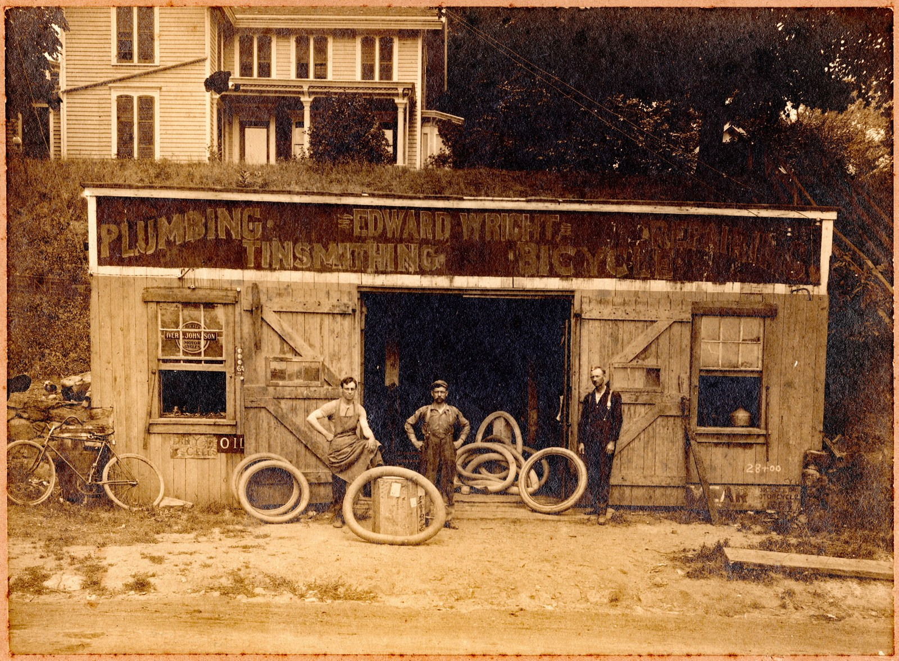
Edward Wright’s Shop
A blacksmith shop turned tire shop, at the foot of the bank on Main Street — and the photograph its proprietor captioned himself.
Draft narrative — the chain of title for the shop lot is documented continuously from 1892 to the present, and Edward Wright’s business is documented from his own advertising, 1913–1921. The paving date that would fix the photograph, and the lot’s pre-1892 origin, remain open; unresolved questions are listed at the end.
I. The Photograph
Three men stand in front of a low, wide, board-sided building, among a scatter of automobile tires and inner tubes. One wears a workman’s long apron and rests a foot on a tire; one stands in the open doorway in overalls; the third, in suspenders, keeps to the far door. A bicycle leans against the wall at the left edge of the frame. Above the shop’s roof, on a grassy bank, stands a two-story clapboard house with a columned two-story veranda — close enough behind the shop that the two buildings share the picture the way they shared the ground.
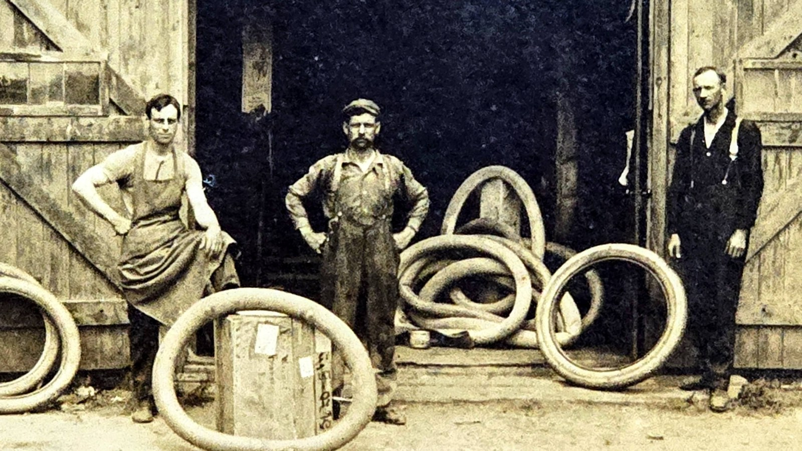
The long sign board across the front, weathered even when the photograph was taken, reads — with the illegible spans marked:
PLUMBING · EDWARD WRIGHT · [&?] REPAIRING
Painted sign board, as legible on the original print. REPAIRING resolves on the author’s scan; the short word before it, and the end of BICYCLE[S], remain weathered past certain reading.
TINSMITHING · BICYCLE[S]
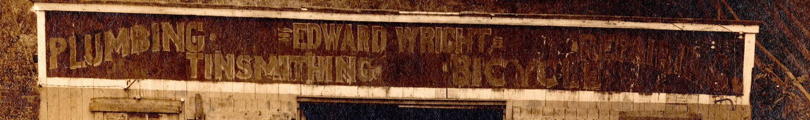
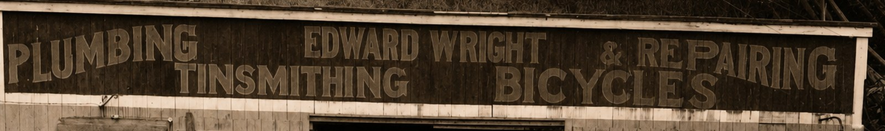
Smaller signs fill in the trade. An Iver Johnson Motor Cycles dealer’s emblem hangs in the left window. DRY CELLS is painted beside the sill, next to a black enamel OIL plate. A paper poster near the right corner advertises bicycle and motorcycle tires. On the sill of the right window sits a large conical-lidded tin can — the tinsmith’s own product, in the tire dealer’s window.
And at the lower right, chalked or painted in white on the boarding, is a set of characters that dates the whole scene: 28 + 00. It is a highway surveyor’s station mark — a point 2,800 feet along a survey baseline — and — as Wright’s own caption connects it to the hard-surfacing — it places the photograph after the survey crews laying out the improvement of Main Street had been through.
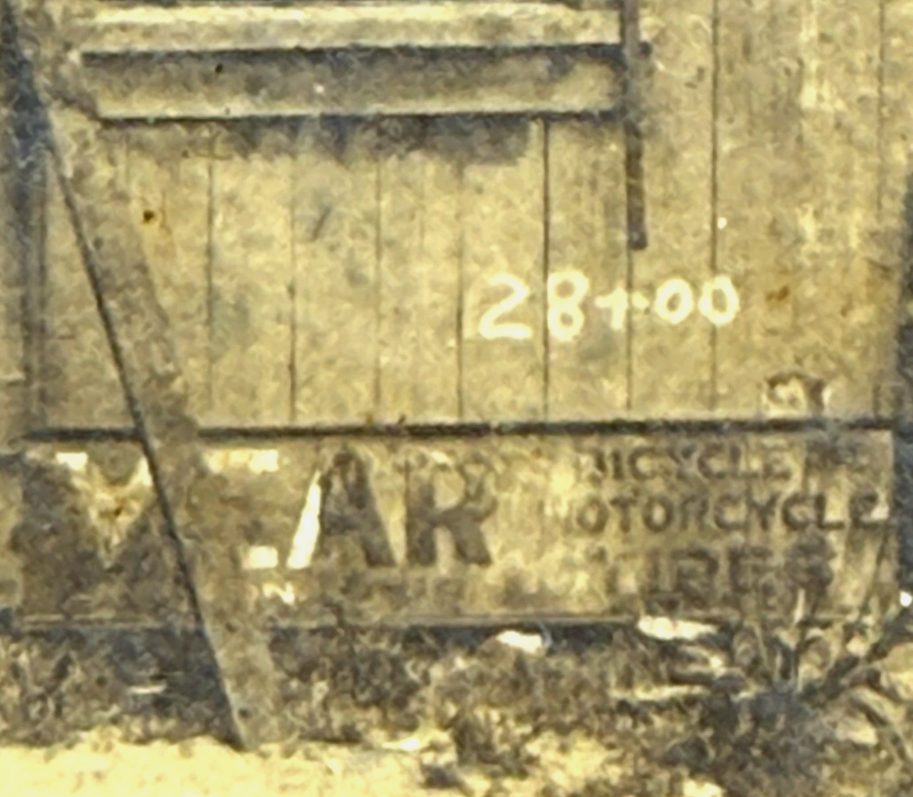
II. The Caption and Its Paper
The photograph survives with something rarer than a photograph: a typed caption by the man on the sign. On a browned scrap of paper, Edward Wright set down what the picture showed:
This picture was taken in about the year 191[1] before or about the time Main Street Brewster, N.Y. was hard surfaced. Note the Surveyors mark (28 + 00 at lower right hand corner of building. The Shop was originally Howard Smith’s Blacksmith Shop before I used it. Left to right ( EDWARD WRIGHT ) (WALTER BENEDICT ) ( FRANK L. HALL ) I operated the shop from about July 1907 to September 1920.
Typed caption signed Edward Wright, on the verso of a printed promissory-note blank. The bracketed final digit of the year is torn from the sheet; its recovery is described at the end of this section.
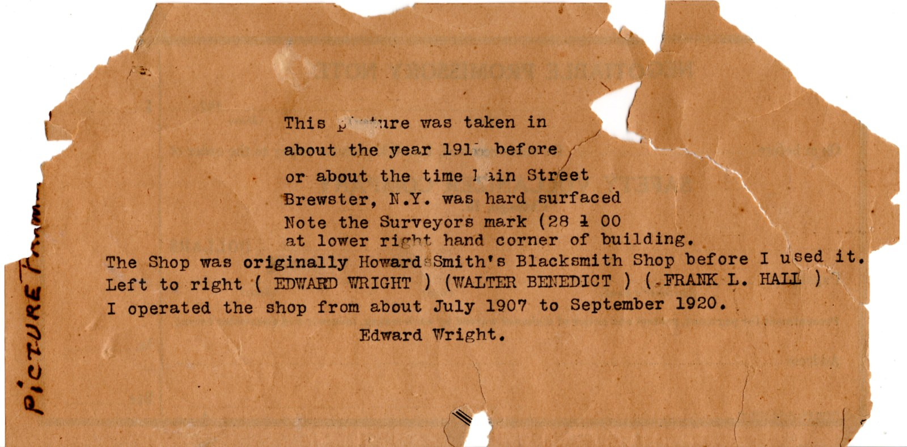
The paper he typed it on tells its own story, and disciplines how the caption can be used. It is a blank negotiable promissory note of the Safety Vulcanizer Company of Chicago — a maker of tire-repair equipment — and its printer’s form code dates the printing to April 1926. So the caption was written at least six years after Wright left Brewster, and something like fifteen years after the shutter fell: a man in the tire trade, still, reaching for the nearest scrap of paper to label a picture of his old shop. His memory of the year is hedged in his own typing. His dates are testimony, not record — and this study treats them that way, checking each one against paper he never saw.
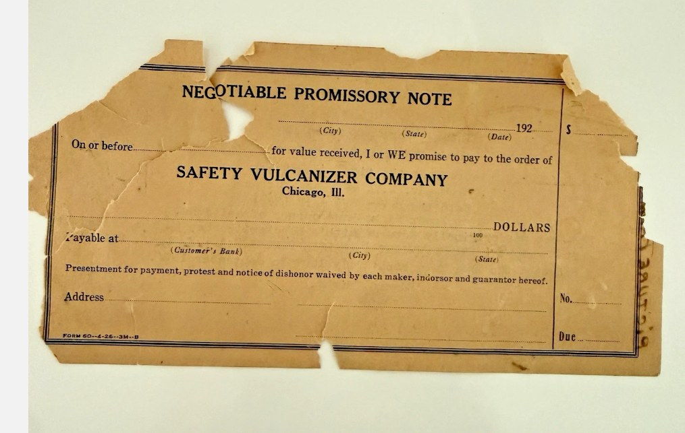
The checks, as the sections below lay out, come back remarkably well. The station mark he pointed to is exactly where he said. The blacksmith he named turns out to hold the lot in the deed record, in the very years his caption implies. And his most careful phrase — “before I used it,” not owned it — turns out to be the most precise thing anyone wrote about this property in a century.
The print itself has a journey worth recording. The caption he typed on 1926 stationery shows the photograph was still with him after Brewster, and somewhere in the century that followed — Daytona, and wherever the family went after — this one drifted more than a thousand miles from the building it shows. In 2026 it surfaced in a thrift shop in Arkansas, where a stranger named Jeff judged it “too important to leave there,” bought it, and — when this project found him — sold it back toward Brewster with a note: “I am glad this one found its way home.” The photograph now sits a short walk from the ground it was taken on.
It came home still in its period housing: a dark oak frame of about eleven by thirteen inches around the roughly six-by-eight print, hung on a twisted wire, with an embossed mat. Taped to the backing board is an envelope — a later custodian’s addition — in which Wright’s typed caption was kept folded. The brittle sheet tore while it lived there, and the envelope quietly preserved the evidence: small fragments of the caption remain stuck to the gum of its flap.
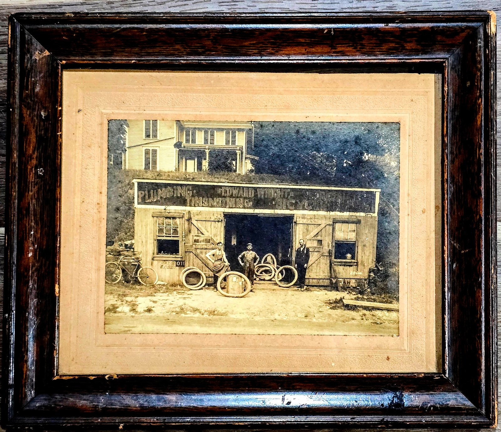
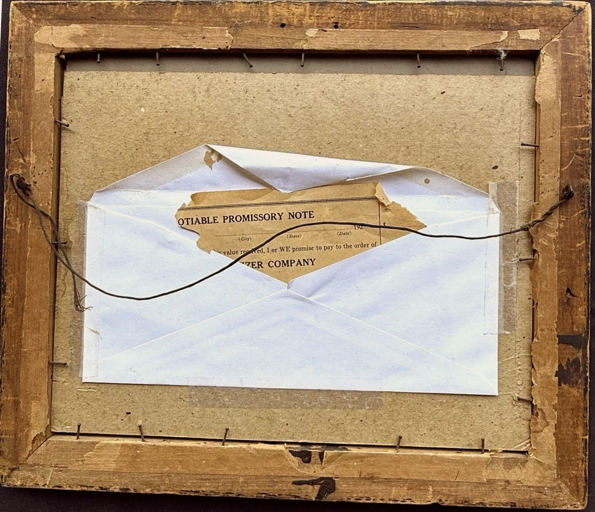
One of those adhered fragments turns out to matter. The caption’s damage includes a single narrow channel of paper loss, one character wide and two lines tall, running from just after “191” in the year down through the M of “Main” on the line below. On the envelope flap, upside down where the gum caught it, is a single narrow strip of caption stock bearing two typed marks one line-pitch apart. Inverted, the upper mark is a foot-serifed 1 — the same stem, head-flag, and foot as this typewriter’s own 1s elsewhere on the sheet — and the lower is a multi-stroke capital consistent with the missing M. The strip is the torn channel’s missing piece, and the digit Wright typed was 1: “about the year 1911.” A second, smaller typed fragment adheres to the flap’s left wing; its few characters have not been matched to any torn zone of the caption, and it is left in place, unresolved. Neither fragment has been — or should be — peeled from the gum that saved them.
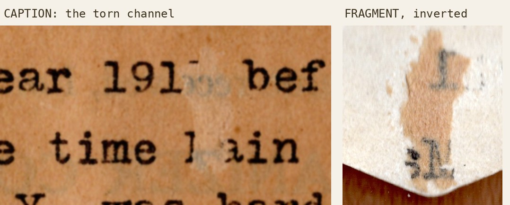
III. Two Roads and a Bank
The shop’s site only makes sense once you know that the two streets bounding its lot are not the same age. The lot runs through a short block, from Main Street at the bottom of a steep bank up to Oak Street at the top — and every deed in its chain, from 1892 to 1970, bounds it on the north by
the old highway leading past the residence formerly of Harvey Bailey, deceased, now called Oak Street…
Recurring boundary language, Putnam County Liber 75 of Deeds, p. 113 (1892) through Liber 683, p. 153 (1970).
Oak Street is the old road. Main Street below it is the newcomer — and a deed for the lot next door says so outright. In March 1868, John R. Bloomer sold John Newell the adjoining parcel, bounded on one side by “the old highway running past the dwelling house of Albert Brush” and on the other by “the New Highway leading from Brewsters Station” PC 48/393. The railroad had come, a new road had been cut below the old one to reach the depot, and the strip of ground between the two roads became buildable frontage. The house in the photograph stands at the top of the bank facing the old road, where houses had always faced; the shop stood at the toe of the bank on the new one, in a position that had not existed before the railroad. Oak Street also carried a second name — School Street, after the district school lands on its north side — and the two names ran concurrently for decades rather than one replacing the other: the Sanborn maps label both roads MAIN and OAK as early as 1887, yet a 1912 deed calls the upper road School Street alone PC 104/371, and a 1920 deed for the same land still hedges with “Oak Street (sometimes called School Street)” PC 117/506. The mapmakers’ name and the conveyancers’ name took thirty years to converge.
Negative findings, recorded as findings: the Beers atlas of 1867 and Reed’s map of 1876 show no structure at the shop site — though small outbuildings fall below those atlases’ threshold, so absence of depiction is not proof of absence. The Sanborn fire-insurance series, which would settle the question, does not reach this stretch of Main Street until the five-sheet edition of 1910 — the earlier editions consulted (1887, 1893, 1898) end before it. The building’s construction date therefore cannot be fixed from the map record.
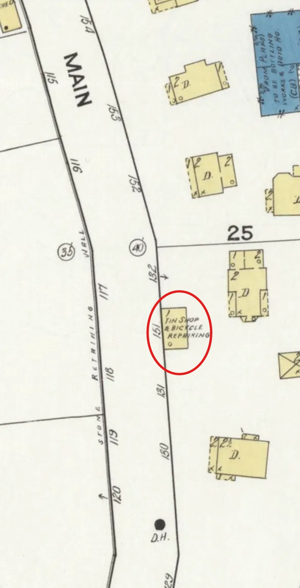
IV. The Blacksmith in the Chain
The shop lot’s recorded history begins on December 14, 1892, when John and Julia Newell conveyed it to J. Howard Smith for $2,000, “and the buildings thereon” PC 75/113 — improved land, though the deed does not say improved with what. Smith assumed two mortgages held by the Putnam County Savings Bank, one of them dating to April 1871: debt that had been riding on this ground for twenty-one years, and that reaches back past everything else in the record.
J. Howard Smith held the lot for thirteen years. He is the “Howard Smith” of Wright’s caption — the blacksmith whose shop this was “before I used it” — and the caption’s accuracy here is worth pausing on: a surname and given name typed from memory, decades later and a thousand miles away, landing squarely on a grantee in the chain of title. On September 27, 1905, Smith and his wife Ellen sold to Lizzie O’Loughlin for $2,750 PC 117/442 — and then the deed did something this parcel’s paper does habitually: it sat unrecorded. For fifteen years.
It finally went on record on the morning of February 27, 1920, at 9:55 — three minutes before the next deed in the chain, by which Lizzie O’Loughlin conveyed the lot, for ten dollars, to Thomas J. and Edward J. O’Loughlin — on its face a family transfer, though the relationship (presumably her sons) has not been documented PC 117/444. A stale deed raced onto the record to perfect the chain immediately ahead of a family transfer: ordinary conveyancing housekeeping, with one large consequence for the history. For the whole of Lizzie O’Loughlin’s ownership — 1905 to 1920 — her title was invisible in the public index. Anyone searching the record in those years would have found the lot apparently still Smith’s.
Lizzie O’Loughlin held title from September 27, 1905 to February 26, 1920 — an interval that wholly contains Edward Wright’s stated occupancy of July 1907 to September 1920. Wright appears nowhere in the lot’s chain of title, and the grantee indexes show no acquisition by him here. He rented the shop, throughout, from Lizzie O’Loughlin. His phrase — “before I used it” — was exact.
V. “Yes, I Am Busy”
What Wright did inside the rented building, his own advertising documents season by season. In August 1913 he ran a small square in the local press with a headline that is very nearly a self-portrait:
Yes, I Am Busy — Hustling all the while. Are you one that is making me hustle? If not it is time for you to hustle awhile. Edward Wright. Vulcanizing, Plumbing, Tinning. East Main Street. Brewster, N.Y. Telephone Connection.
Advertisement, August 1, 1913.
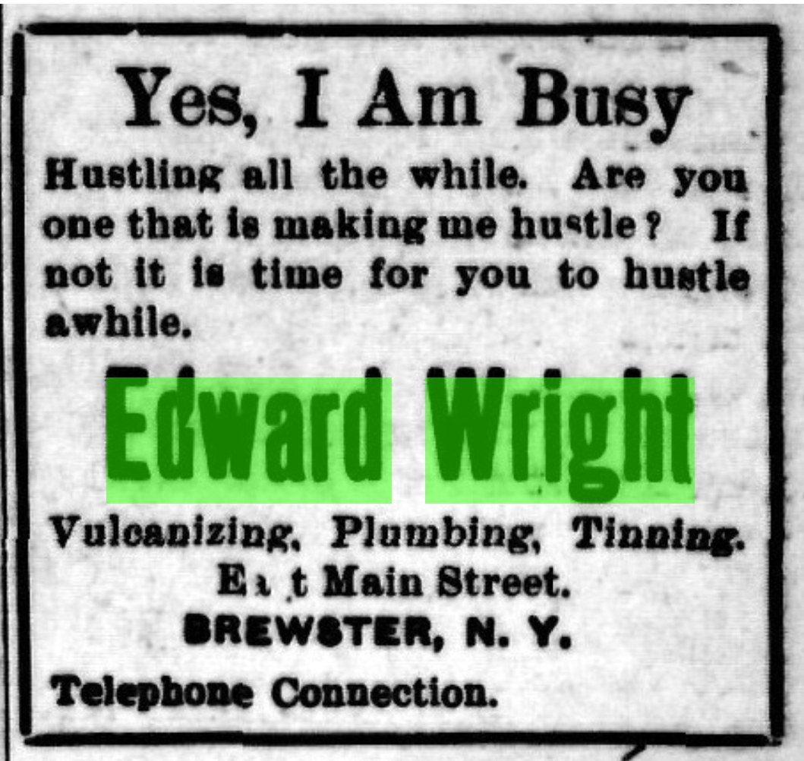
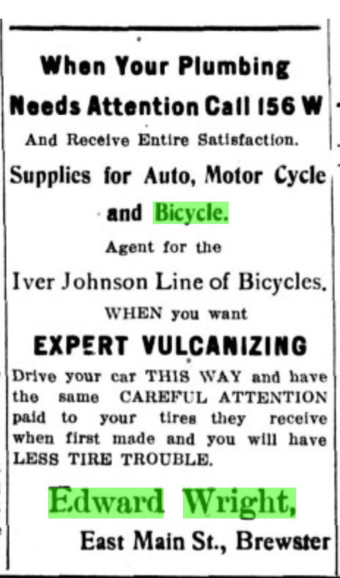
By August 1915 the advertisement had grown a telephone number — 156-W — and a fuller trade: plumbing attended to, “Supplies for Auto, Motor Cycle and Bicycle,” “Agent for the Iver Johnson Line of Bicycles,” and “EXPERT VULCANIZING — Drive your car THIS WAY and have the same CAREFUL ATTENTION paid to your tires they receive when first made.” A third advertisement promotes the 1916 Iver Johnson Two Speed — “a great hill climber” — under the banner “Good Roads and a Good Bicycle,” and offers vulcanizing for everything down to “Baby’s Cart.” The Iver Johnson connection is on the building itself: the Fitchburg arms-and-cycle firm built motorcycles only from 1907 until the line wound up in 1916, and its Motor Cycles dealer emblem hangs in the shop window in the photograph.
A third advertisement, from May 1915, is the fullest inventory the shop ever published of itself — worth quoting whole for what it says about how many trades one small building held at once:
Note. When in Need. Plumbing, Vulcanizeing, Bicycles and Supplies, Baby Cart Tires and Wheels, Flash Lights and Batteries; Auto and Motor Cycle Supplies, Stove Repairs, Metal Ceiling, Lawn Mowers Ground. Edward Wright, East Main St., Brewster. Telephone 156-W.
Advertisement, May 21, 1915. Spelling as printed.
Every painted sign on the building answers to a line of it. “Flash Lights and Batteries” is the DRY CELLS lettering by the window sill; the tire lines are the stock heaped in the dooryard; and “Stove Repairs, Metal Ceiling” is the tinsmith still working under the vulcanizer’s roof — pressed-tin ceilings were a tinsmith’s bread and butter, and the conical-lidded can in the right window is that trade’s product. “Lawn Mowers Ground” reaches back further still: edge-grinding is the old smithy’s work surviving in the machine age, in the building where Howard Smith had kept his forge.
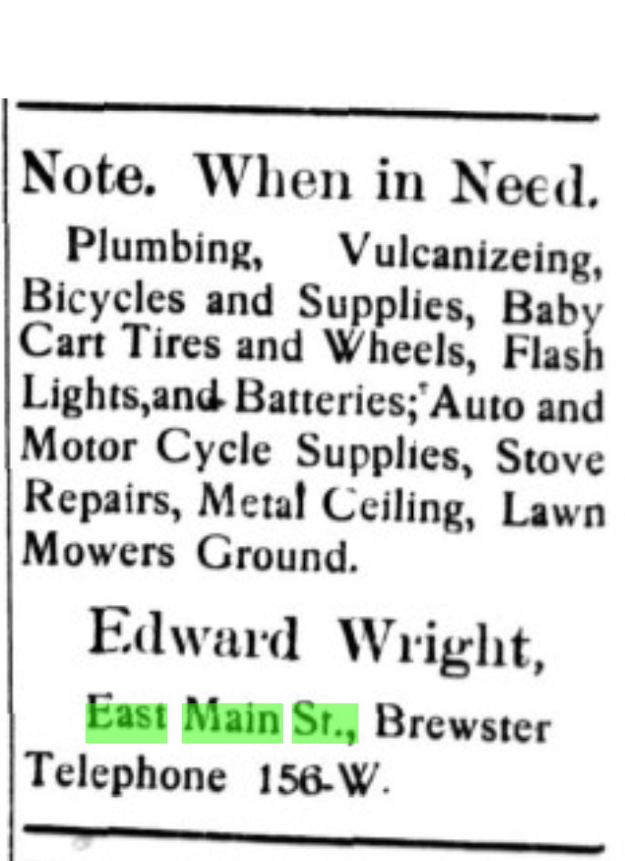
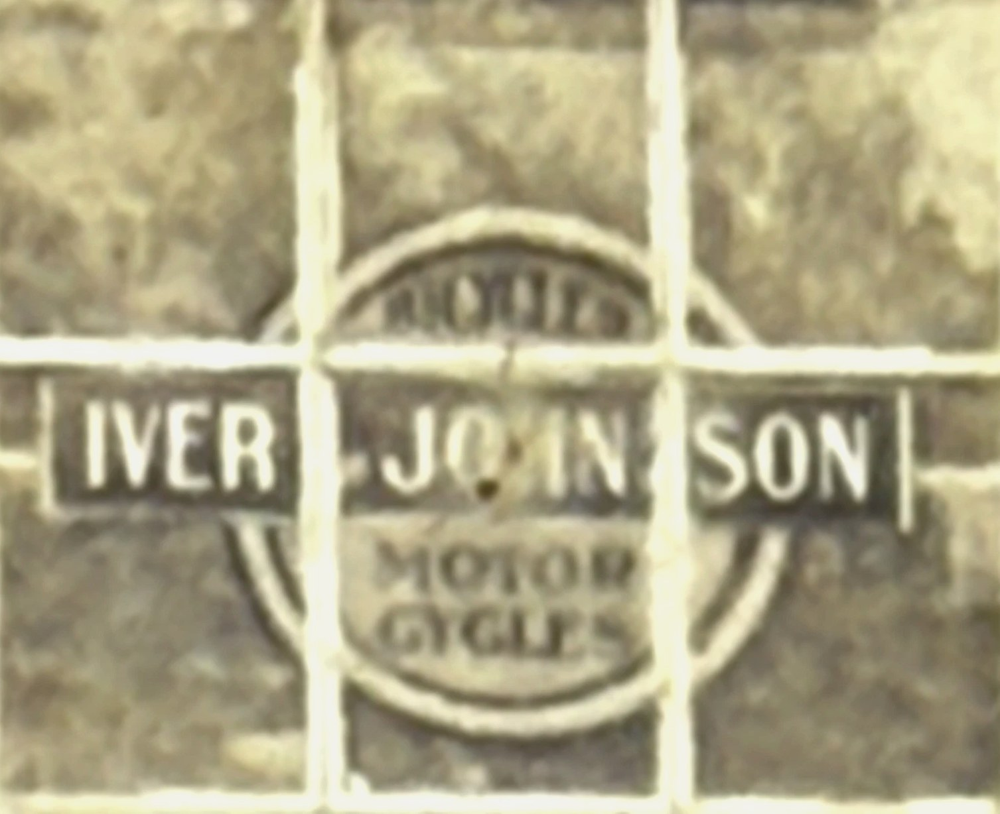
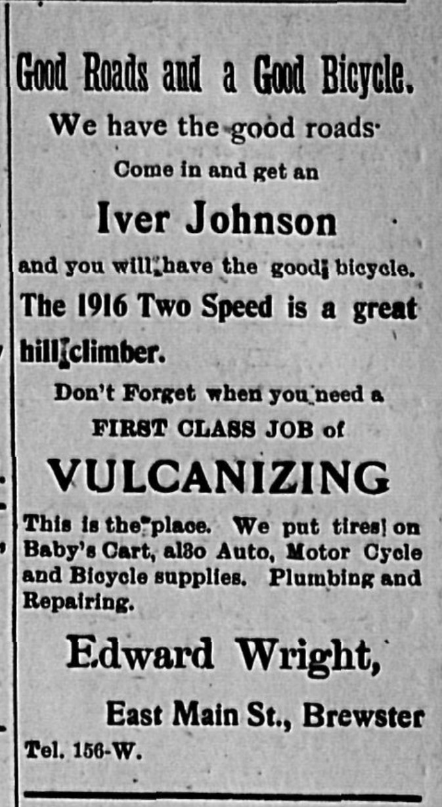
By September 1918 Wright appears on the Standard Oil Company of New York’s published list of Brewster dealers selling SOCONY motor gasoline — alongside, intriguingly, an F. S. Hall, whose relationship to the Frank L. Hall standing at the right of the photograph is an open question. The arc across a single decade of advertising is the arc of the American roadside itself: a plumber and tinsmith, to a bicycle agent, to a motorcycle dealer, to a tire and vulcanizing man, to a gasoline dealer — all in one small rented building at the foot of a bank, in a shop where a blacksmith had shod horses.
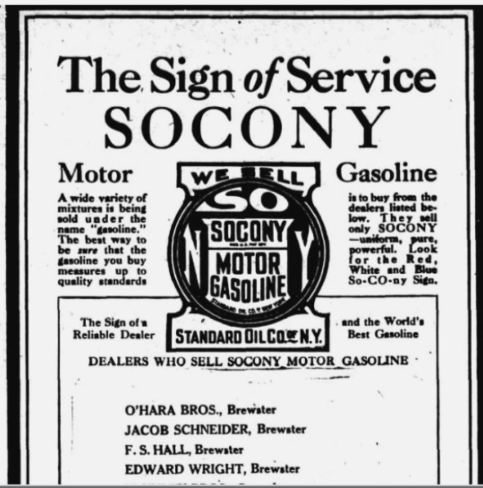
VI. Dating the Picture
Wright’s testimony, with its torn digit recovered, reads “about the year 1911” — still a hedged recollection set down some fifteen years later, but now a complete one. The photograph itself supplies independent bounds. The Sanborn sheet of April 1910 letters the building “TIN SHOP & BICYCLE REPAIRING” — the trades of the sign board, in Wright’s tenure. The Iver Johnson motorcycle emblem in the window points to the agency years, and the marque left the motorcycle business after 1916. The stacked automobile casings and inner tubes, and the tire poster, fit the vulcanizing trade of the 1915 advertisement. The road in the foreground is plainly dirt, and the surveyor’s station mark on the boarding says the paving survey had just come through — which is exactly the moment Wright’s caption assigns the picture: “before or about the time Main Street… was hard surfaced.”
And the newspaper closes the bracket from above. By August 1913 the surfacing was not only done but already failing:
Owing to recent agitation on the subject the much needed repair of the macadam on Main street is being effected. We hope that the good work will continue.
The Brewster Standard, August 8, 1913.
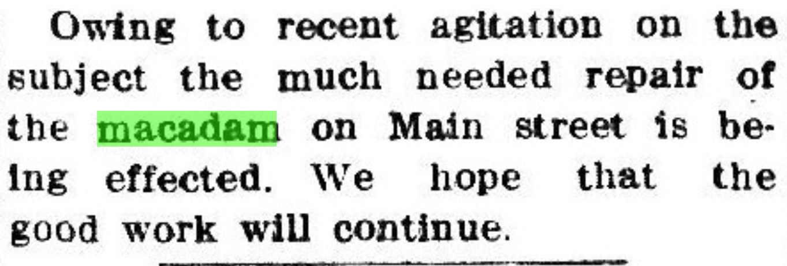
Macadam in “much needed repair” by mid-1913 was macadam laid seasons earlier — early water-bound surfaces famously raveled under automobile traffic within two or three years. The surfacing of Main Street therefore belongs to roughly 1910–1912, and Wright’s recovered “about 1911” sits at the center of a bracket closed from both ends by independent paper. The photograph is c. 1911. One caution travels with this: the 1913 item says “Main street” without stating its reach, and whether the shop’s East Main stretch was surfaced in the same season as the village core is not established — though the surveyor’s stationing on the shop’s own boarding says the work, whenever let, was laid out past its door. The original improvement notice — petition, contract, or completion — has not been found in the Standard and remains open.
VII. One Week in February, 1920
The shop’s era ended, and the record of its ending is compressed into a single remarkable week. On February 26, 1920, Lizzie O’Loughlin deeded the shop lot to Thomas J. and Edward J. O’Loughlin — a within-family transfer on its face. The next morning her fifteen-year-old purchase deed and the new family deed were recorded three minutes apart — and that same day, February 27, the local press reported that Edward Wright, “plumber and machinist and dealer in motorcycles and bicycles, desirous of entering upon business at Daytona, Florida,” had sold his property to John Ekstrom through the agency of James Murty, for $4,500.
What Wright sold was not the shop — it was never his to sell. His deed to Ekstrom, executed April 1, 1920 PC 117/506, conveys the house he and his wife Rose had bought in 1912 from the firm of Nichols & Adams for $3,500 PC 104/371: a parcel on the north side of Oak Street — the same old highway that bounds the top of the shop lot, though where along it his land lay has not been fixed on the modern map. The newspaper’s figures, long puzzling, resolve against the deed itself: its “175 feet on Main street” is the deed’s 176 feet on Oak, and its “150 feet on Oak street” matches the parcel’s computed diagonal east line of about 153 feet — one parcel’s two long dimensions, with the street names attached wrongly. A reporter working the clerk’s office that morning would have had the O’Loughlin recordings and the Wright sale in front of him at once — which would explain how a tenant’s departure and a landlord’s reorganization blended into a single paragraph. That is inference, but no reading of the deeds supports the paragraph as printed. The paper record, read whole, unblends it.
Wright wound the business down through the year — his caption remembers operating until September — and the equipment was still dispersing the next winter: in February 1921, C. C. Merrick of Towners advertised that “Having bought Edward Wright’s Lowell vulcanizer I am prepared to repair tires and tubes.” Then Brewster loses him to Daytona — where, to judge from the Chicago vulcanizer-company form he typed his caption on years later, he stayed in the tire trade.
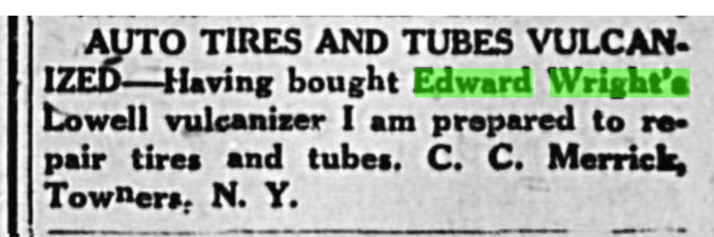
VIII. The Lot Afterward
The O’Loughlin family kept the lot for forty-four years. Edward J. O’Loughlin took his wife Anna into a tenancy by the entirety in 1937 PC 223/396; by 1964, conveying alone from Tonetta Lake Road, he had evidently outlived her, and he sold to Frank J. and Gail L. Manente, who were already living nearby on Main Street PC 603/487. The Manente years produced the survey whose courses — drill hole on the north side of Main, 80.54 feet along the street, up the bank 133 feet, 78.64 feet along Oak — every deed since has copied, down to a misspelled neighbor’s name frozen in the boilerplate. Through the Roberto PC 927/42, Scomillio, and Lugo ownerships to the present, the parcel has kept exactly the shape it had when the blacksmith worked at the bottom of it: one through lot, house above, shop ground below, bounded by the same neighbors the 1892 deed named.
The shop building itself is gone — when, the record has not yet said. The ground where it stood is a graveled parking apron at the foot of the bank. The bank above is terraced in dry-laid stone; the upper tiers, with their timber stairs and stockade fencing, are modern work, and only the lowest course, immediately behind the shop’s footprint, could be contemporary with the building. The house still stands at the top, facing the old road, as it did over the shop’s roof in the photograph.
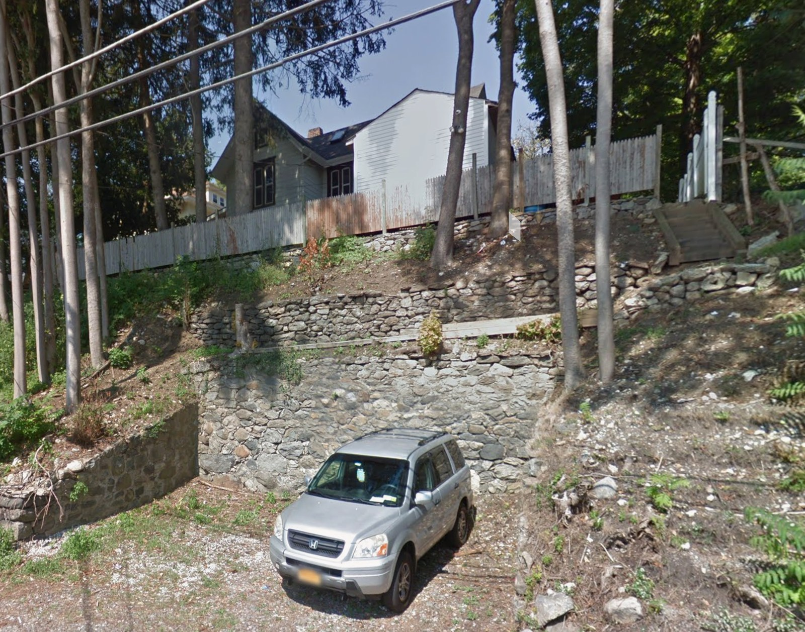
IX. Chain of Title
| Ref | Executed | Parties | Consideration | Notes |
|---|---|---|---|---|
| 75/113 | Dec. 14, 1892 | John & Julia Newell → J. Howard Smith | $2,000 | “and the buildings thereon”; two PCSB mortgages assumed (1871, 1886) |
| 117/442 | Sep. 27, 1905 | J. Howard & Ellen L. Smith → Lizzie O’Loughlin | $2,750 | recorded Feb. 27, 1920, 9:55 a.m. — fifteen years late |
| 117/444 | Feb. 26, 1920 | Lizzie O’Loughlin → Thomas J. & Edward J. O’Loughlin | $10 &c. | recorded Feb. 27, 1920, 9:58 a.m. |
| 223/396 | Mar. 25, 1937 | Edward J. O’Loughlin → Edward J. & Anna T. O’Loughlin | $1 | tenants by the entirety |
| 603/487 | Dec. 11, 1964 | Edward J. O’Loughlin → Frank J. & Gail L. Manente | $10 &c. | grantor conveying alone; Anna predeceased |
| 683/153 | Jan. 22, 1970 | Frank J. Manente → Gail L. Manente | $10 &c. | Pawling Savings Bank mortgage assumed |
| 722/449 | 1974 | → Gail L. & Frank Manente | — | per assessment record; instrument not yet read |
| 747/510 | 1977 | → Anthony J. & Frances A. Roberto | — | confirmed by recital in 927/42 |
| 927/42 | Dec. 19, 1986 | Anthony J. & Frances A. Roberto → Thomas A. & Pamela Roberto | $10 &c. | first appearance of the modern survey courses |
| 1242/103 | 1994 | → Michael Scomillio | — | per assessment record |
| 1558/59 | 2001 | → Rosa Lugo | — | per assessment record |
| 1949/321 | Apr. 2, 2014 | Executor of Rosa Lugo → present owners | — | executor’s deed; current ownership |
One recorded encumbrance rides beneath the whole chain: mining rights reserved to others, recited in every deed from 1892 through 1970 — the routine fossil of Brewster’s iron-district past. A utility easement of 2007 PC 1817/425–426 is the only modern addition.
- The original Main Street surfacing notice — petition, contract, or completion, c. 1910–1912. Keyword searches of the Standard (“paving,” “macadam”) have so far found only the August 1913 repair item; the origin job, and whether the East Main stretch was included in the same season, remain open. Highway survey plans carrying the 28+00 stationing would fix both.
- The lot’s pre-1892 origin. No recorded conveyance to John Newell for this parcel has been found in the grantee index, 1812–1892 — a genuine negative, since the county’s online index is complete from formation. The 1871 Putnam County Savings Bank mortgage, whose mortgagor’s name would settle the question, is the decisive unpulled instrument.
- When the shop building was erected, and when it came down.
- Walter Benedict and Frank L. Hall, the other two men in the photograph — and whether Frank L. Hall is the F. S. Hall of the 1918 SOCONY dealer list.
- The 1905–1907 interval: who used the shop between Smith’s sale and Wright’s arrival.
- Thomas J. O’Loughlin’s half-interest, held from 1920 and absent by 1937.
- Edward and Rose Wright in Daytona: the 1930 census, Florida directories, and the rest of the tire man’s story.
- The exact placement of Wright’s own former house lot on the modern tax map, via the Ekstrom chain forward from 1920.
Sources
- PC 48/393 — Bloomer to Newell, March 31, 1868 (recorded 1870). The adjoining lot; the “New Highway leading from Brewsters Station” and the old highway named.
- PC 75/113 — Newell to Smith, December 14, 1892. Head of the documented chain; the 1871 and 1886 PCSB mortgages recited.
- PC 117/442, PC 117/444 — Smith to O’Loughlin (1905) and O’Loughlin to O’Loughlin (1920), recorded three minutes apart, February 27, 1920.
- PC 104/371, PC 117/506 — Nichols & Adams to Wright (1912) and Wright to Ekstrom (1920): Edward Wright’s own residence parcel, north side of Oak/School Street.
- PC 223/396, PC 603/487, PC 683/153, PC 927/42, PC 1949/321 — the chain, 1937 to the present.
- PC 62/117 — Sheriff’s deed in partition, 1879: the unrelated Philipstown Newells, read and excluded.
- “Yes, I Am Busy,” advertisement, August 1, 1913 — vulcanizing, plumbing, tinning, East Main Street.
- “When Your Plumbing Needs Attention Call 156 W,” advertisement, August 20, 1915 — auto, motorcycle and bicycle supplies; Iver Johnson bicycle agency; expert vulcanizing.
- “Good Roads and a Good Bicycle,” advertisement, c. 1915–16 — the 1916 Iver Johnson Two Speed; exact date pending.
- SOCONY motor gasoline dealer list, The Brewster Standard, September 6, 1918 — Edward Wright and F. S. Hall among Brewster dealers.
- “Note. When in Need,” advertisement, May 21, 1915 — the shop’s full nine-trade inventory.
- Untitled item on the repair of the Main Street macadam, The Brewster Standard, August 8, 1913 — the surfacing’s upper bound.
- “Main Street Property Transfer,” February 27, 1920 — the sale to Ekstrom and the Daytona plan; dimensions garbled as analyzed in Section VII.
- “Auto Tires and Tubes Vulcanized,” February 18, 1921 — C. C. Merrick’s purchase of Wright’s Lowell vulcanizer.
- The shop photograph, c. 1910–1916, original print in the author’s collection (recovered from Arkansas, 2026 — see Section II), with Edward Wright’s typed and signed caption on the verso of a Safety Vulcanizer Company promissory-note blank (form printed April 1926).
- The period oak frame (~11 × 13 in.) and its backing, with a custodial envelope whose flap gum retains adhered fragments of the caption — including the strip carrying the year’s final digit and the M of “Main,” documented in situ by high-resolution scan (Section II), and a second, smaller typed fragment not yet matched to any torn zone.
- An AI-assisted recreation of the photograph (2026) appears in Section I strictly as a sign-legibility aid, labeled as an interpretation; the present-day site photograph in Section VIII is Google Street View imagery with a parked vehicle digitally removed, as its caption states. Neither is treated as evidence anywhere in this study.
- Sanborn Map Company, Brewster, N.Y., April 1910 edition — the building lettered “Tin Shop & Bicycle Repairing.” Earlier editions (1887, 1893, 1898) do not reach this stretch of Main Street — a coverage negative, not a survey of absence.
- Beers county atlas, 1867, and Reed’s map, 1876 — no structure depicted at the site; the Bloomer, Wixon, Brush, and Bailey properties of the deed descriptions located.
- Putnam County Real Property ownership record card for the subject parcel — source for the 1974–2001 conveyances pending individual reads.
- Current Putnam County tax map — whose parcel boundary reproduces, figure for figure, the survey courses first recorded in 1986.
- Iver Johnson’s Arms & Cycle Works, Fitchburg, Mass. — motorcycle production 1907–1916; the bicycle line continued long after. Standard published histories.
- Safety Vulcanizer Company, Chicago — tire-repair equipment maker, active through at least the late 1930s (U.S. patent assignments).
Research by R. Griffin · August 2026 · A Property History